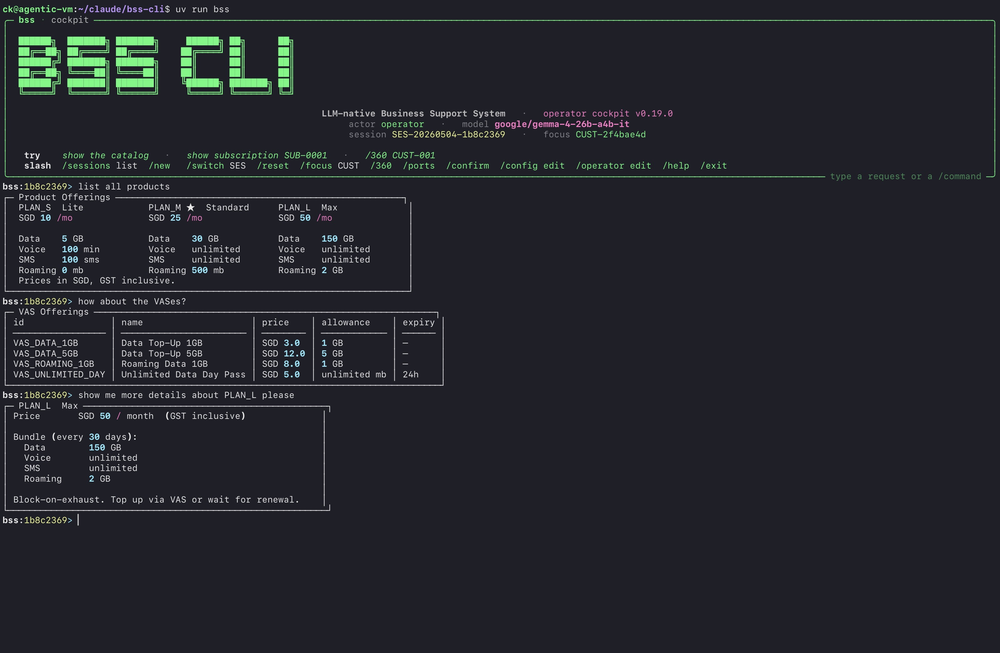
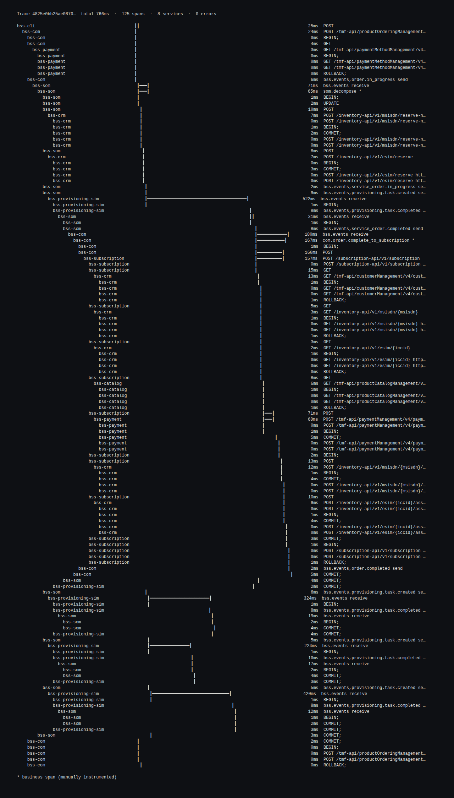
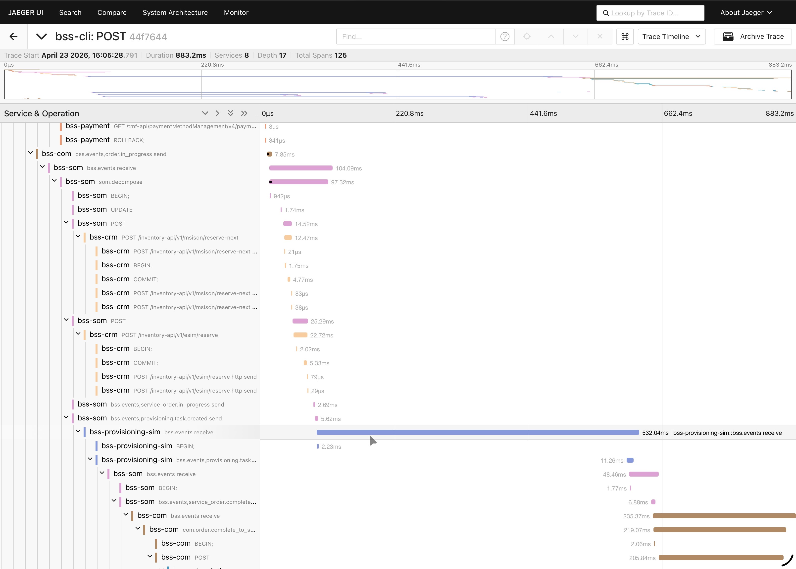
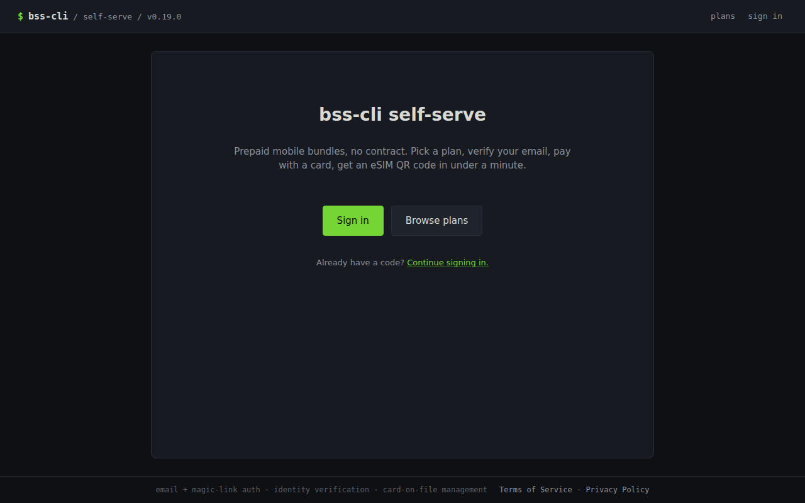
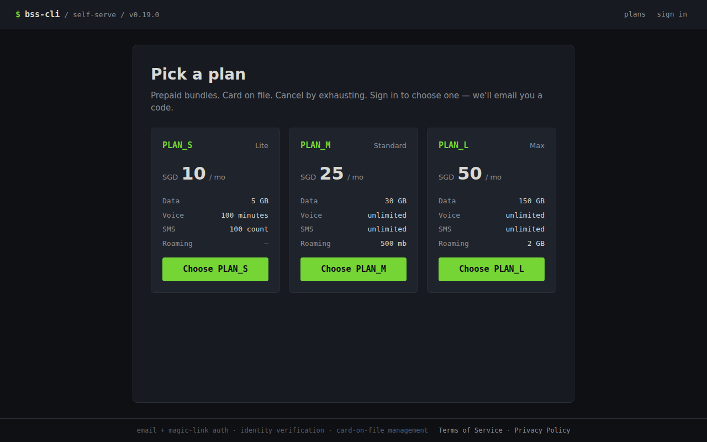
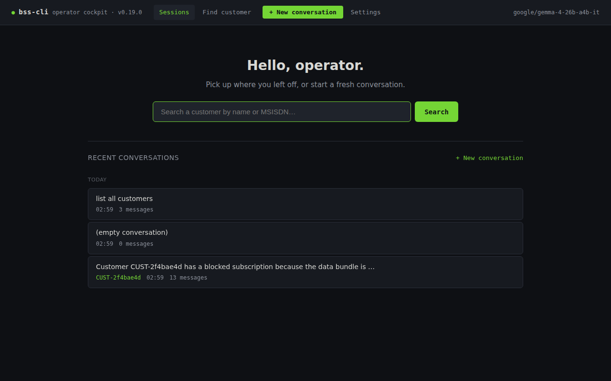
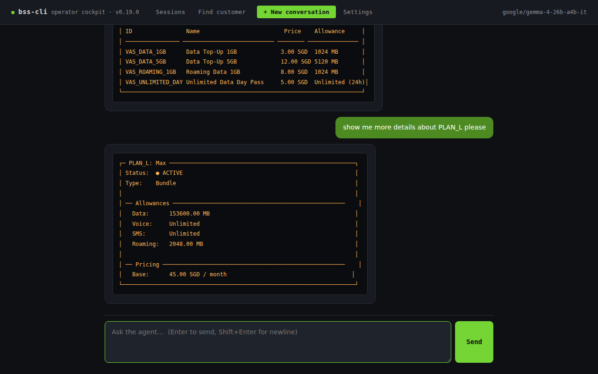

bss-cli
v0.20.1The entire BSS, in a terminal. SID-aligned. TMF-compliant. LLM-native. eSIM-first.
What this is
BSS-CLI is a Business Support System for a small mobile MVNO, built to run entirely from a terminal.
Nine TMF-compliant service containers — Catalog, CRM (with Cases / Tickets / Port-requests
and the Inventory sub-domain), Payment, COM, SOM, Subscription, Mediation, Rating,
Provisioning-sim — plus two web portals (self-serve customer and operator cockpit). Every operation is a tool the LLM can call; the primary
UI is the bss CLI plus ASCII visualizations and a scoped chat surface in the customer
portal.
It is opinionated. eSIM-only, bundled-prepaid, block-on-exhaust, card-on-file mandatory. Every write travels through a policy layer so domain invariants hold even when an agent is driving. Payloads on the wire match the spec — camelCase, conformant, pointable at a real TMF client — not naming theater over a bespoke schema. eKYC, real-customer UI, network elements, batch CDR, and OCS protocols are intentionally out of scope (channel-layer concerns).
v0.20 is the soak baseline before v1.0. All three real-provider integrations are live (Resend email, Didit KYC, Stripe Checkout). Telco hygiene gaps are closed (MNP port-in/port-out, MSISDN replenishment, roaming as a product). Renewals fire automatically on their period boundary via an in-process worker; customers get a reminder email ~24h before. v0.20 adds an indexed-corpus knowledge tool so the cockpit can answer how-to questions from the operator handbook + runbooks + doctrine with cited anchors (Postgres FTS by default, optional pgvector hybrid). The only mocked surface left for v1.0 is SM-DP+ (real eSIM provisioning is NDA-gated).
BSS-CLI exists as three things at once:
- A reference implementation for engineers learning telco BSS/OSS.
- A deployable MVP for a small MVNO — one
docker compose upand you are running. - A substrate for agentic experiments against realistic telco operations — behind a policy layer that will not let an LLM corrupt state.
The operator cockpit (REPL canonical)

bss REPL is the cockpit. Type natural language; the agent calls tools; results render as ASCII cards. Slash commands (/ports, /360, /focus, /confirm) cover deterministic operator flows. v0.20 adds knowledge.search / knowledge.get so the cockpit can answer how-to questions from the indexed handbook + runbooks with cited anchors.
Since v0.13 the REPL is the canonical operator cockpit. The browser surface on
port 9002 is a thin veneer over the same Postgres-backed Conversation store —
exit bss, open the page, see the same turns. No login wall: the cockpit is
single-operator-by-design behind a secure perimeter, with audit attribution coming from
.bss-cli/settings.toml. Destructive actions propose first and wait for
/confirm.
This is what "LLM-native" actually feels like in practice. The agent is not a separate surface grafted
on top of the system — it goes through the same HTTP endpoints, the same typed tool signatures, the
same write-through policy layer, and the same audit trail a human CLI user does. The only difference is
the front door: a conversation instead of a verb. When the agent tries to do something illegal, the
policy layer hands back a structured PolicyViolation with a rule code and
machine-readable context, and the agent self-corrects from that.
The seven principles
These are the soul of the project. They live in a CLAUDE.md at the repo root that reads
like a contract, and they are enforced — there is a make doctrine-check target that
fails the build if anyone calls datetime.now() in business logic instead of the injected
clock. Rules only matter if something refuses to merge when you break them.
-
1
Bundled-prepaid only. Pay upfront; a bundle either has quota or it does not. No proration, no dunning, no collections, no credit-risk modelling to reason about.
-
2
Card-on-file is mandatory. Every customer has a payment method before activation. A failed charge means no service — no exceptions, no grace period.
-
3
Block-on-exhaust. Service stops the same instant a bundle hits zero. Only two paths back: the scheduled renewal on the period boundary, or an explicit VAS top-up the customer initiates.
-
4
CLI-first, LLM-native. Every capability is a typed tool the agent can call. ASCII art is the visualization language — the terminal is the product surface, not a compromise.
-
5
TMF-compliant where it counts. Real TMF620, 621, 622, 629, 635, 638, 640, 641, 676, 678, and 683 payloads. CamelCase on the wire, conformant to the spec. You can point a real TMF client at it.
-
6
Lightweight is measurable. BSS containers run in ~1.2 GiB RAM, cold-start in ~22 seconds, p99 internal API under 50 ms. Numbers on the tin, re-measured at every release.
-
7
Write through policy, read freely. Every write goes through a policy layer that enforces domain invariants. The LLM cannot corrupt state even when asked to. That is the whole point.
Architecture
Every BSS write goes through the per-service policy layer. Three trigger paths feed it:
direct via bss-clients — every CLI/REPL command, the
entire signup funnel, every post-login self-serve route, and every read; sub-second,
deterministic, no LLM. Orchestrator-mediated via astream_once
— the customer-portal chat surface (the only orchestrator-mediated route post-v0.11),
wrapping a LangGraph ReAct agent over the same tool registry. In-process tick loops
— the v0.18 renewal worker fires automatic renewals and sends upcoming-renewal reminder
emails on a 60-second tick; FOR UPDATE SKIP LOCKED makes it multi-replica safe by
construction.
Inside, two planes connect the services: synchronous HTTP over the typed
bss-clients layer (TMF APIs, named BSS_*_API_TOKEN) for calls that
need an immediate answer, and asynchronous events over a RabbitMQ topic
exchange bss.events for reactions. Every service writes directly to its own
schema in one shared PostgreSQL 16; audit.domain_event is written in the
same transaction as the domain write, with the RabbitMQ publish happening after commit
(simplified outbox). Every service exports OpenTelemetry spans to Jaeger;
bss trace renders the same spans as an ASCII swimlane in the terminal.
The audit log gets a coherent attribution on every write: actor,
channel (portal-self-serve / portal-csr /
portal-chat / cli / system:renewal_worker), and
service_identity (named-token perimeter, v0.9).
┌──────────────────┐ ┌──────────────────┐ ┌──────────────────────────┐
│ Self-serve UI │ │ Operator cockpit │ │ bss (CLI + REPL) │
│ port 9001 (v0.4) │ │ port 9002 (v0.13)│ │ + LangGraph orchestrator│
│ signup · chat │ │ browser veneer │ │ canonical cockpit │
└────────┬─────────┘ └─────────┬────────┘ └────────────┬─────────────┘
│ │ │
┌────────┴────────┐ │ │
│ direct │ │ shared cockpit.session│
│ bss-clients │ │ Conversation store │
│ (signup, post- │ │ (Postgres-backed) │
│ login, reads) │ │ │
│ │ │ │
│ chat → astream │ │ │
│ (customer_self_ │ │ │
│ serve profile) │ │ │
└────────┬────────┘ │ │
│ ▼ ▼
│ ┌──────────────────────────────────────────────────┐
│ │ bss_orchestrator.session.astream_once(channel, │
│ │ actor=…, service_identity=…) · ReAct agent · │
│ │ allow_destructive gated by /confirm │
│ └──────────────────────────┬───────────────────────┘
│ │
└────────────────────►────────────┴──────────────────────►
│ HTTP (TMF APIs) + bss-clients
┌──────┬────────┬──────────────┼───────┬────────┐
▼ ▼ ▼ ▼ ▼
┌─────┐┌─────┐ ┌─────┐ ┌─────┐┌─────┐
│CRM* ││Pay │ │Cat │ │COM ││Subs │
│8002 ││8003 │ │8001 │ │8004 ││8006 │
└──┬──┘└──┬──┘ └──┬──┘ └──┬──┘└──┬──┘
│ │ │ │ │ ↑
│ └─ HTTP (e.g. Pay→CRM "customer exists?")
│ │ │
│ ┌───────────────────────┼──────┘
│ │ ┌─────┐ ┌─────┐ ┌─────┐ ┌──────┐
│ │ │SOM │ │Med │ │Rate │ │Prov │
│ │ │8005 │ │8007 │ │8008 │ │ Sim │
│ │ └──┬──┘ └──┬──┘ └──┬──┘ │ 8010 │
│ │ │ │ │ └──┬───┘
▼ ▼ ▼ ▼ ▼ ▼
═══════════════════════════════════════════════════════════
║ RabbitMQ — topic exchange: bss.events ║
║ order.* · service_order.* · service.* · provisioning.* ║
║ subscription.* · usage.* · crm.* · payment.* · port_* ║
═══════════════════════════════════════════════════════════
In-process tick loop (v0.18): subscription service runs a
60s renewal-sweep + reminder-email worker in lifespan; FOR
UPDATE SKIP LOCKED keeps it safe across replicas.
External providers (v0.14 → v0.16):
Resend ─ transactional email (magic link, OTP, renewal)
Didit ─ KYC: hosted UI + signed-webhook corroboration
Stripe ─ Checkout + webhook reconciliation (PCI SAQ A)
Cockpit knowledge tool (v0.20+):
knowledge.search / knowledge.get over the indexed doc corpus
(HANDBOOK + CLAUDE + runbooks). Tier-0 Postgres FTS by default;
Tier-1 pgvector hybrid behind BSS_KNOWLEDGE_BACKEND=hybrid.
Operator-cockpit profile only; never customer chat.
┌────────────────────────────────────────────────┐ ┌──────────────┐
│ PostgreSQL 16 + pgvector (single instance) │ │ Jaeger │
│ │ │ (v0.2+) │
│ crm · catalog · inventory · payment · │ │ OTLP/HTTP │
│ order_mgmt · service_inventory · provisioning │ │ → traces UI │
│ subscription · mediation · billing · cockpit ·│ └──────────────┘
│ audit · integrations · portal_auth · │
│ knowledge (v0.20+ doc-corpus RAG) │
└──────────────────────┬─────────────────────────┘
│ read-only
▼
┌──────────────┐
│ Metabase │
└──────────────┘
* CRM hosts the Inventory sub-domain (MSISDN + eSIM pools) on port 8002
under /inventory-api/v1/...; not a separate container in v0.x.
Trace anything end-to-end

bss trace for-order ORD-… — the swimlane, rendered in the terminal.
Same trace, two surfaces — bss trace for the terminal, Jaeger UI for when you want to
drill down.
OpenTelemetry is the source of truth. The ASCII view is a terminal-native lens on the same spans, not a parallel tracing system; no second pipeline to maintain, nothing to drift. If something is happening in the real traces, it is happening in the swimlane — and if you need timing breakdowns, span tags, or log correlation, Jaeger is right there.
trace 4825e0bb25ae0870 766ms 125 spans 8 services 0 errors
POST /tmf-api/productOrderingManagement/v4/productOrder [com ] ████████████████████████ 766ms
└─ POST /tmf-api/customerManagement/v4/customer/CUST-022 [crm ] ██ 18ms
└─ POST /tmf-api/paymentMethod/v1/charge [payment ] ████ 34ms
└─ POST /tmf-api/serviceOrderingManagement/v4/serviceOrder [som ] ████████████████ 512ms
└─ INSERT INTO service_inventory.cfs [postgres ] ▌ 2ms
└─ POST /tmf-api/resourceInventoryManagement/v4/resource [inventory ] ███ 31ms
└─ POST /provisioning/task [provisioning] ████████████ 381ms
└─ AMQP publish bss.events provisioning.task.completed [rabbitmq ] ▌ 3ms
└─ POST /tmf-api/subscription/v1/activate [subscription] ███ 47ms
└─ AMQP publish bss.events order.completed [rabbitmq ] ▌ 3ms
The portals
Demo-grade chrome, production-shape platform. No design system, no i18n, no
accessibility audit — the portals are built to make the backend visible, not to win a UX
award. The platform underneath is the real story: a magic-link login wall (v0.8), a named-token
perimeter that flows service_identity into every audit row (v0.9), direct-API
post-login self-serve with step-up auth on every sensitive write (v0.10), a chat surface
scoped to the logged-in customer with a hard ownership trip-wire (v0.12), and the v0.13
operator cockpit (REPL canonical, browser veneer over a shared Conversation
store).
Two small server-rendered portals sit next to the CLI: a self-serve customer portal on
:9001 and an operator cockpit on :9002. Both are HTMX plus Jinja,
no SPA framework, vendored htmx.min.js, which keeps the dependency surface tiny
and lets streamed tool calls land in the page over SSE without fighting a client-side router.
Since v0.11, the signup funnel writes directly through bss-clients from the route
handlers — one route, one BSS write, no orchestrator hop. Wall time dropped from about 85
seconds to under five. The customer chat widget is the only orchestrator-mediated surface that
remains, and v0.12 narrowed its reach with the customer_self_serve tool profile
(see the next section).
Self-serve portal (customer-facing)

/welcome. Brand bar plus Sign-in / Browse-plans CTAs.
/plans. Three plans, four allowance rows aligned (Data / Voice / SMS / Roaming, the last added in v0.17 telco-hygiene release).Operator cockpit — browser veneer

localhost:9002/. Recent conversations, customer search, new-conversation CTA. No login wall (single-operator-by-design behind a secure perimeter).
/confirm to commit.The chat surface (v0.12)
The chat widget is one modality of access, not a privileged path. It calls the same typed tools through the same policy layer as the CLI — just through a tighter prompt-visible window. The architectural point is the chokepoint: the LLM cannot reach a tool the customer's direct UI doesn't already expose. If the chat ever has a capability the dashboard doesn't, that's a doctrine bug, not a feature.
The window is a tool profile, customer_self_serve — sixteen curated tools:
eight read wrappers (subscription.list_mine, get_balance_mine,
usage.history_mine, etc.), four write wrappers (vas.purchase_for_me,
schedule_plan_change_mine, cancel_pending_plan_change_mine,
terminate_mine), three public catalog reads, and one escalation tool
(case.open_for_me). No *.mine tool accepts a customer_id
parameter; the actor is bound from auth_context.current() and a startup self-check
refuses to boot if any signature drifts.
customer chat ──▶ ┌─────────────────────────────────────────┐
│ Layer 1 — server-side policies │
│ (the primary boundary, unchanged) │
├─────────────────────────────────────────┤
│ Layer 2 — *.mine wrapper pre-check │
│ customer_id bound from auth_context; │
│ cross-customer ids refused at the seam │
├─────────────────────────────────────────┤
│ Layer 3 — output ownership trip-wire │
│ every emitted tool result scanned for │
│ cross-customer fields; mismatch → P0 │
└─────────────────────────────────────────┘
│
generic safety reply
on trip — no leaked tool name
Caps bound the blast radius of a runaway customer (or a runaway prompt). Twenty requests per
hour and two dollars per month by default, configurable via BSS_CHAT_*_PER_*
environment variables, accounted from OpenRouter usage metadata into an
audit.chat_usage row per customer per period. Cap checks fail closed: a database
error means the chat refuses to call astream_once, not the other way round.
Five categories the chat is not allowed to resolve on its own —
fraud, billing_dispute, regulator_complaint,
identity_recovery, bereavement. The system prompt names them with
examples; when the agent recognises one, it calls case.open_for_me, which writes
a CRM case linked to a SHA-256 hash of the conversation. The transcript itself lives in
audit.chat_transcript, addressed by hash, append-only. The operator opens the
case in the v0.13 cockpit and reads the conversation in the "Chat transcript" panel.
Pre-signup browse mode is the same widget with a different system prompt. Any verified-email
visitor without a customer record yet sees the chat on /welcome and
/plans; the *.mine wrappers refuse cleanly because there is no actor
to bind. The visitor can ask "what plans do you have?" and get an answer from the
public catalog reads without being forced through signup first.
The 14-day soak
v0.12 ships with a soak runner (scenarios/soak/run_soak.py) that drives 30
synthetic customers through 14 simulated days under a frozen accelerated clock — chat
queries, dashboard hits, escalation triggers, and deliberate cross-customer probes. It is an
internal-beta soak under accelerated time, not real user traffic; the report
(soak/report-v0.12.md) is what the v0.12 release tagged on, and a re-run on
v1.0 is the public-cohort gate before tagging.
- Ownership-check trips
- 0 / target 0
- Cross-customer leaks
- 0 / target 0
- Chat-usage drift
- 0.0% / tolerance 5%
- p99 chat latency
- 8.35 s · alarm tier (fail at 15 s)
What's shipped
- Services
- 9 + 2 portals
- Hero scenarios
- 19 end-to-end (~100s wall)
- Doctrine grep guards
- 16 in
make doctrine-check - Real-provider integrations
- Resend · Didit · Stripe
- Cold start
- ~22 seconds (v0.20, BYOI)
- Runtime RAM
- ~1.2 GiB across 11 containers (excl. Postgres / RabbitMQ / Jaeger / LLM)
- Doc corpus indexed
- ~370 chunks across 25 files (handbook + runbooks + doctrine)
- Agent dev session
- ~$0.005 (Gemma 4 26B A4B)
Tech stack
Versions
-
v0.20.1
Cockpit prose-rendering + UX polish. Markdown-aware final-message rendering on both surfaces (REPL via Rich, browser via opt-in pipe-table HTML when
knowledge.*fires); sharedbss_cockpit.postprocessstrips Harmony channel-format leakage (<channel|>,assistantfinal); empty-bubble synthesis when gemma's terminal AIMessage is empty post-knowledge.search; pre-existingContextVar.resetacross-task crash in the SSE finally block guarded; cockpit canvas widened to 1280px and bubble typography tightened. -
v0.20
Cockpit knowledge tool (handbook RAG).
knowledge.search/knowledge.getover an indexed doc corpus (HANDBOOK + CLAUDE + runbooks); citation guard catches un-cited handbook claims; Tier-0 Postgres FTS default, Tier-1 pgvector hybrid behind a backend toggle. Newknowledgeschema,--data-roaming-mbflag closes the v0.17 catalog admin gap. Postgres image moves topgvector/pgvector:pg16. New single-filedocs/HANDBOOK.mdconsolidates setup, env vars, providers, personas, and every runbook into one Obsidian-friendly reference (the same corpus the cockpit indexes). -
v0.19
Soak baseline before v1.0. UX polish: deterministic intent intercept on list-shaped REPL queries (kills LLM fabrication), Rich/box-drawing ASCII panels rendered as
<pre>in the cockpit browser, consolidated docs sweep, README rewrite to 1.0-baseline, KYC-provider rename (myinfo→prebaked), retired stale SHIP_CRITERIA + Phase-12 framing. -
v0.18
Automated subscription-renewal worker. In-process tick loop in the subscription lifespan: three sweeps per tick (renew due / skip blocked-overdue / send upcoming-renewal email).
FOR UPDATE SKIP LOCKEDfrom day one — multi-replica safe by construction. -
v0.17
Telco hygiene release. MNP (port-in / port-out via
crm.port_request), MSISDN replenishment (bss inventory msisdn add-range+ low-watermark event), roaming as a product (data_roamingallowance type,VAS_ROAMING_1GBtop-up). -
v0.16
Real Stripe Checkout + webhook reconciliation (PCI scope guard refuses to boot in production-stripe mode if a card-number
<input>survives in any rendered template). Idempotency keys, drift detection, refund-record-only. - v0.15 Real Didit KYC + the eSIM-provider seam. Channel-layer KYC: hosted UI + signed-webhook corroboration. BSS only verifies signed attestations + corroboration.
-
v0.14
Real-provider integration arc begins. Per-domain adapter Protocols,
integrationsschema for forensic external-call + webhook-event logging, ResendEmailAdapter for transactional auth mail. -
v0.13
Operator cockpit. CLI REPL canonical, browser veneer over a shared Postgres-backed
Conversationstore. v0.5 staff-auth retired in favour of single-operator-by-design behind a secure perimeter;OPERATOR.mdas operator-editable persona;/confirmfor destructive ops. -
v0.12
Chat scoping + escalation + 14-day soak.
customer_self_servetool profile, output ownership trip-wire, per-customer rate + cost caps, five non-negotiable escalation categories, popup chat widget on every post-login page, pre-signup browse mode. - v0.11 Signup funnel migrates to direct API; the v0.4 LLM-mediated signup demo retires. Each step is one direct write from a route handler. Wall time: ~85s → <5s. Chat is the only orchestrator-mediated route that remains.
-
v0.10
Post-login self-serve goes direct — top-up, plan-change scheduler, COF management, eSIM redownload, line cancel, contact updates, billing history. One route, one
bss-clientswrite, no orchestrator hop. Step-up auth gates every sensitive label. -
v0.9
Named-token perimeter. Each external surface gets its own
BSS_*_API_TOKEN;service_identityflows intoaudit.domain_eventso audit answers "which surface initiated this write?" not just "which actor". -
v0.8
Self-serve portal login wall — email + magic-link OTP + step-up auth for sensitive writes. New
portal_authschema; tokens HMAC-SHA-256 with a server pepper;PortalSessionMiddlewarebindsrequest.state.customer_idfrom the verified session. -
v0.7
Catalog versioning + plan-change snapshot doctrine. No proration; price snapshotted at order time so renewal locks in the price even when the catalog re-prices. Operator-initiated
migrate_to_new_pricewith regulatory notice. - v0.6 Docs sweep, REPL renderer dispatch (rendered ASCII cards in the interactive REPL), tech-debt sweep, snapshot test framework.
- v0.5 CSR portal (customer 360 + ask-the-agent), case threading, scenario engine extensions.
- v0.4 Self-serve portal (HTMX + SSE agent log).
-
v0.3
BSS_API_TOKENmiddleware — the smallest possible auth story, behind theauth_context.pyseam that has been in every service since day one. -
v0.2
OpenTelemetry + Jaeger +
bss traceASCII swimlane. - v0.1 Nine services, full TMF surface, write-through-policy, hero scenarios.